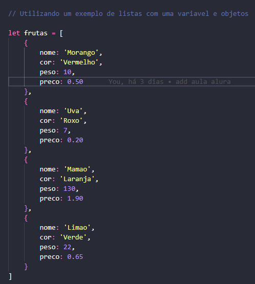
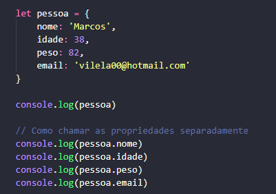
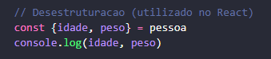
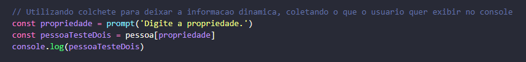
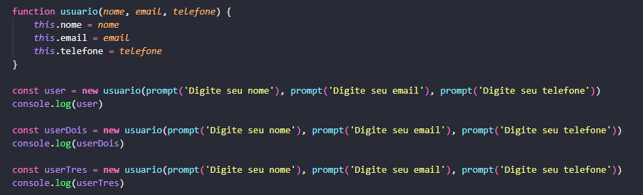
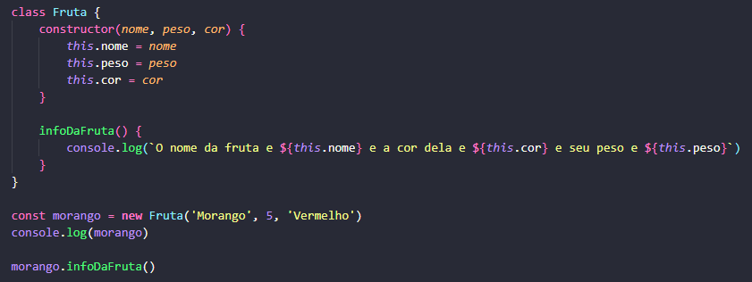

As listas são representadas pelos [ ] e podem definir diversar propriedades de uma variável, objeto ou classe.
Abaixo um exemplo de uma variável em formato de objeto com 4 propriedades distintas. As propriedades devem ser sempre separadas com vírgula.
Os objetos são variáveis compostas por 2 ou mais propriedades. Ao definir uma variável utiliza-se as { } para atribuir mais de uma propriedade a esta variável. Como visto no exemplo acima, a uma mesma variável foram atribuídas propriedades distintas utilizando uma lista, que define variações de uma variável que pode ou não conter propriedades de objeto.
No exemplo abaixo podemos ver como definir as propriedades de um objeto e fazer a exibição no console.
Utilizando o mesmo exemplo, pode-se criar uma variável utilizando uma propriedade de um objeto.

Abaixo vemos uma forma de desestruturar os dados, muito utilizado em React.
Como alterar uma propriedade já declarada

Utilizando [ ] para tornar a informação solicitada dinâminca
Um exemplo mais elaborado onde solicitamos os dados ao usuário, e depois exibimos o que o usuário solicita.

Abaixo temos a criação de uma função, e atribuição de propriedades utilizando o construtor 'new'. A função foi definida com parâmetros e depois as variáveis foram criadas com as entradas do usuário. Neste exemplo consideramos 3 entradas utilizando o 'new'.
Outro exemplo utilizando o construtor 'new'. Aqui foi incluída uma nova função dentro da função principal. Dois exemplos de exibição do console foram usados. A utilização de ${ } permite chamar uma variável ou propriedade para exibição concatenada. Peceba que é necessário utilizar crase ``.

Perceba que criamos novas variáveis e chamamos elas pelo console e também pela função.
O for in pode ser utilizado para listar as propriedades de um objeto e também pra exibir o nome e valor das propriedades.

As classes são utilizadas juntamento com o constructor para definição das propriedades do objeto. A forma de escrita é mais otimizada e pode-se utilizar juntamente com todas as outras funcionalidades do JS, como funções, consições, operações, etc.
Perceba que sempre definimos as classes com a primeira letra maiúscula. Dentro da classe definimos o constructor com os parâmetros. Ainda dentro da classe, podemos evocar uma função para utilizar na chamada dos novos dados.
Um exemplo mais complexo utilizando if, while, class, function. Os dados são solicitados do usuário e dinamicamente ele pode interagir solicitando o cadastro de outro produto ou terminando a operação.